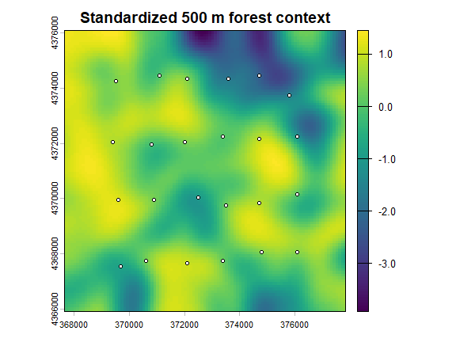

11. Large Landscapes
Bill Peterman
Source:vignettes/v11-large-landscapes.Rmd
v11-large-landscapes.RmdThe displayed results and figures in this guide were computed from
the executable R Markdown source shipped with the package. Routine
package checks use these precomputed results to keep the CRAN check time
modest. To rerun every code chunk, copy
system.file("vignette-source", "v11-large-landscapes.Rmd", package = "terradish")
to a writable directory and render that copy with
rmarkdown::render().
This vignette covers fitting terradish models on large
rasters, with hundreds of thousands to millions of grid cells. It
assumes you can already fit and read a small model as shown in vignette("v01-getting-started", package = "terradish").
The examples use the Ohio pond data from the other guides
(vignette("v12-data-generation", package = "terradish")
describes how they were made). That graph is small, so every example
runs in seconds and the guide can show real output. It teaches
configuration and how to read each diagnostic, not speed: the timings
printed here say nothing about a large raster. Time and memory depend on
graph geometry, conductance contrast, focal-site count, and hardware, so
measure them on your own design.
Goal. Start with solver choice and domain sensitivity. Read the optional sections on parallel workers, nuisance optimization, and curvature when a measured computational problem calls for them.
library(terradish)
data(ohio_ponds)
coords <- ohio_ponds$ponds[c("x", "y")]
# Pond-level allele counts and the covariance response used in every guide.
g <- factor(ohio_ponds$samples$pond, levels = ohio_ponds$ponds$pond)
Y <- rowsum(ohio_ponds$snp, g, reorder = FALSE)
Y <- Y[ohio_ponds$ponds$pond, , drop = FALSE]
N <- 2 * as.numeric(table(g))
stopifnot(all(N == N[1]))
S <- cov_from_biallelic(Y, N) / N[1]
# Standardize once on the full domain, then build the graph.
covariates <- scale_covariates(terra::unwrap(ohio_ponds$forest500))
surface <- conductance_surface(covariates, coords, directions = 8)
c(graph_vertices = nrow(surface$x), focal_sites = length(surface$demes))
#> graph_vertices focal_sites
#> 10404 24The graph covers the full landscape, but the response is covariance
among 24 ponds, so more raster cells add no sampled populations or
marker information. The fits below use the nu = 40 working
assumption from Getting Started.
terra::plot(covariates, main = "Standardized 500 m forest context")
points(coords, pch = 21, bg = "white", cex = 0.7)
How to read the map. The ponds are spread across most of the raster, and paths connecting them can run through any part of it. A tightly cropped map is therefore not automatically an equivalent, faster analysis (see the cropping section below).
When a landscape is “large”
terradish builds a weighted graph over the raster grid
and solves linear systems on it to get resistance distances among focal
sites. The cost grows with the number of graph vertices (the raster
cells that are not missing). Two stages matter, and they have different
limits:
-
Graph construction.
conductance_surface()always performs one sparse Cholesky factorization of the graph and stores it in the returned object, whateversolveryou request later. Construction memory therefore sets the first limit: a raster too large for that one factorization cannot produce a graph. -
Fitting. Every likelihood, gradient, and Hessian
evaluation solves the system again with updated conductances. The
solverargument acts here, where repeated solves dominate the run time.
The inference machinery (standard errors and
confidence intervals) keeps its form at any size. Larger analyses can
include more focal sites, and Wishart precision still depends on the
supplied effective degrees of freedom, nu (see the
information section below).
As a calibration, in one development test on a single machine, version 1.1.1 built the graph for a one-million-cell raster in under a minute and fitted models on it in minutes to tens of minutes on one core. Read that as one machine’s result, not a guarantee. There is no universal cell-count limit, because missing cells, graph connectivity, conductance contrast, and the number of focal sites all change the cost.
Choosing a solver
Both terradish() (the fitting wrapper) and
terradish_algorithm() (one likelihood and gradient
evaluation) take a solver argument. The solver changes
how the resistance-distance system is solved during
fitting, not the statistical model. Iterative solvers should agree with
the direct solver within numerical tolerance, though not necessarily bit
for bit.
# direct (the default): exact sparse Cholesky solves
direct_seconds <- system.time(
fit <- terradish(S ~ forest500, surface,
measurement_model = wishart_covariance, nu = 40,
solver = "direct")
)[["elapsed"]]
# amg: algebraic multigrid, an iterative solver for very large graphs
amg_seconds <- system.time(
fit_amg <- terradish(S ~ forest500, surface,
measurement_model = wishart_covariance, nu = 40,
solver = "amg")
)[["elapsed"]]
# The two solvers must agree on the estimate and the log-likelihood.
rbind(direct = c(forest500 = coef(fit)[["forest500"]],
logLik = as.numeric(logLik(fit)), seconds = direct_seconds),
amg = c(forest500 = coef(fit_amg)[["forest500"]],
logLik = as.numeric(logLik(fit_amg)), seconds = amg_seconds))
#> forest500 logLik seconds
#> direct 0.5800273 141.3124 2.02
#> amg 0.5800272 141.3124 15.65How to read the output. The coefficient and
log-likelihood agree to within 4 × 10-8 and 8 ×
10-9, which is the check to repeat on a manageable case
before you trust an iterative solver on a large one. On this small graph
amg took 15.7 seconds against 2 for direct,
because multigrid setup costs more than a small factorization. Its
advantage appears only on very large graphs.
The choices are:
-
direct(default) uses sparse Cholesky factorization. The factor can hold many more nonzero entries than the graph, so its memory can grow rapidly. -
amguses algebraic multigrid, an iterative solver that avoids repeated factorization during fitting. It does not remove the factorization thatconductance_surface()performs, so it does not lower the memory needed to build the graph. Its convergence depends on conductance contrast and graph structure, and strong barriers can require more iterations or tighter solver settings. -
auto, with default controls, usesdirectbelow 1,500,000 graph vertices andamgat or above. The number of focal sites does not override this switch, andsolver_control$auto_amg_min_verticeschanges the threshold.
Before a long fit, terradish_assess_settings() runs
short optimizer and solver probes on your graph and recommends settings,
and terradish_solver_benchmark() times each direct
factorization:
settings <- terradish_assess_settings(S ~ forest500, surface,
measurement_model = wishart_covariance, nu = 40)
settings # graph size, probe timings, and a verdict
#> terradish setting assessment
#> Graph: 10404 vertices, 41006 edges, 24 focal sites
#> Conductance parameters: 1
#>
#> Recommended settings:
#> optimizer: bfgs (fastest acceptable probe: bfgs_hager_zhang)
#> line search: HagerZhangControl
#> solver: direct (fastest direct solver probe: simplicial_ll + cholmod_cpp_cached)
#> solver_control:
#> $factorization
#> [1] "simplicial_ll"
#>
#> $solve_backend
#> [1] "cholmod_cpp_cached"
#>
#> approximation: none (exact full-resolution fit)
#>
#> Defaults comparison: Assessment differs from terradish defaults: optimizer `newton` -> `bfgs`; solver_control tuned from terradish defaults.
#>
#> Optimizer probes:
#> label elapsed loglik gradient_evaluations hessian_evaluations line_search_trials
#> newton_hager_zhang 0.67 139.9 9 4 5
#> bfgs_hager_zhang 0.36 141.2 8 1 5
#> bfgs_armijo 0.33 139.2 5 1 2
#> status
#> OK
#> OK
#> OK
#>
#> Fastest direct solver probes:
#> factorization solve_backend setup_time solve_time total_time
#> simplicial_ll cholmod_cpp_cached 0.03 0.003199 0.03
#> simplicial_ll matrix 0.02 0.010000 0.03
#> simplicial_ldl cholmod_cpp_cached 0.02 0.003263 0.04
settings$recommended$solver # pass to terradish(solver = ...)
#> [1] "direct"
settings$recommended$optimizer # pass to terradish(optimizer = ...)
#> [1] "bfgs"How to read the assessment. The first lines report
graph size (also in settings$profile).
Recommended settings names the fastest probe that reached
an acceptable log-likelihood: here the bfgs optimizer and the direct
solver. settings$recommended holds those settings as a
plain list to pass to terradish().
Optimizer probes lists each short run with its elapsed
seconds and the log-likelihood it reached after a few steps, so a faster
probe with a clearly lower loglik is not a better choice.
The probes stop early by design, and their log-likelihoods are not
fitted optima.
On a graph this small every probe finishes in a fraction of a second,
so the ranking mostly reflects timer noise and can change between runs.
The recommendation can also name a solver backend that
?terradish marks as experimental. Run the assessment on
your full raster, and treat it as a speed probe: it does not show that a
fit converges or that the measurement model suits your data.
# Setup, solve, and total seconds for each direct factorization.
terradish_solver_benchmark(surface)
#> solver factorization solve_backend replicate n_vertices n_rhs setup_time solve_time total_time
#> 1 direct simplicial_ldl matrix 1 10404 24 0.00 0.02 0.04
#> 2 direct simplicial_ll matrix 1 10404 24 0.02 0.00 0.02
#> 3 direct supernodal_ll matrix 1 10404 24 0.02 0.01 0.05How to read the benchmark. Each row is one
factorization. setup_time is the factorization,
solve_time is the solve for all focal sites, and
total_time is their sum. The smallest
total_time names the factorization to request with
solver_control = list(factorization = ...). Times this
close to zero do not separate the options, so repeat the benchmark on
your full raster before choosing.
Solver choice applies to every symmetric resistance model, whatever
the conductance_model (loglinear_conductance,
smooth_loglinear_conductance, the Gaussian scale-aware
model) or measurement model (mlpe,
leastsquares, generalized_wishart,
wishart_covariance).
After a fit, use the same diagnostics as for a small graph, starting with the fitted-response scatter, and keep the fitted graph for conductance mapping. The other guides show these plots, so the recipe is not run here.
plot(fit, type = "fit") # observed versus fitted covariance for this response
library(ggplot2)
maps <- plot(fit, type = "surface", data = surface)
C <- conductance(surface, fit)
map_limits <- range(terra::values(C), na.rm = TRUE)
# Keep all cells and share limits across the estimate and both bounds.
for (p in maps) {
print(p + scale_fill_viridis_c(
trans = "log10", limits = map_limits,
breaks = c(0.01, 0.1, 0.5, 1, 2, 5, 10, 20),
name = "Conductance\n(log color scale)"
))
}Map colors run from dark purple (low conductance) to yellow (high). Equal color steps are equal ratios, labels stay in conductance units, and the estimate and bounds share limits without clipping.
A smooth map does not establish solver accuracy. Check that estimates
and likelihoods agree with a direct solve on a manageable case, and
inspect both outer and nuisance convergence. Marginal-response plots
need a graph solve at every plotted value, so start with
n = 25 on a large graph.
Information and effective degrees of freedom
For Wishart fits, nu is an effective degrees-of-freedom
value that you supply, not automatically the marker count. Changing
nu leaves the optimum unchanged in theory and scales
interior standard errors in proportion to 1 / sqrt(nu),
which terradish_rescale_nu() shows without refitting. See
vignette("v02-wishart-covariance", package = "terradish")
for choosing nu and vignette("v04-model-comparison", package = "terradish")
for reporting inference across plausible values.
Cropping and coarse warm starts
Cropping removes alternative routes outside the retained domain and can increase resistance between sites even when every site stays inside the crop. In an unpublished development check on one test landscape, cropping raised resistance by 15 to 23% with a two-cell buffer and by 1 to 2% with a ten-cell buffer. Values will differ on your landscape, so compare progressively wider buffers with the same response, sites, formula, and covariate scaling.
# Scale on the original domain once (done above), then crop. Buffers are in
# map units: 2, 10, 25, and 50 cells of this 100 m raster.
buffers <- c(2, 10, 25, 50) * max(terra::res(covariates))
buffer_table <- do.call(rbind, lapply(buffers, function(buffer) {
cropped_surface <- conductance_surface(
covariates, coords, directions = 8, crop_buffer = buffer
)
cropped_fit <- terradish(S ~ forest500, cropped_surface,
measurement_model = wishart_covariance, nu = 40)
interval <- confint(cropped_fit)
data.frame(buffer_m = buffer, vertices = nrow(cropped_surface$x),
forest500 = coef(cropped_fit)[["forest500"]],
lower = interval[1, 1], upper = interval[1, 2])
}))
print(buffer_table, digits = 3, row.names = FALSE)
#> buffer_m vertices forest500 lower upper
#> 200 5328 0.675 0.477 0.873
#> 1000 7920 0.611 0.423 0.798
#> 2500 10404 0.580 0.396 0.764
#> 5000 10404 0.580 0.396 0.764
# The uncropped fit, and the package's rule of thumb for a small buffer.
c(full_graph = coef(fit)[["forest500"]],
half_max_site_distance_m = max(dist(coords)) / 2)
#> full_graph half_max_site_distance_m
#> 0.5800273 4527.6925691
# crop_to_focal_buffer() crops the raster stack directly, if you prefer to
# build the graph yourself; it keeps the scale_covariates() metadata.
cropped <- crop_to_focal_buffer(covariates, coords, buffer = 200)
c(full = terra::ncell(covariates), cropped = terra::ncell(cropped))
#> full cropped
#> 10404 5328How to read the output. Compare estimates and
intervals across buffers. With a 200 m buffer the graph keeps 5328 of
10404 vertices and the forest coefficient is 0.67, against 0.58 on the
full graph. At 1000 m it is 0.61, and from 2500 m the crop retains the
whole raster and reproduces the full fit. The tight crops change the
estimate because they remove routes, not because they add information.
If the coefficient or its interval keeps changing as the buffer widens,
keep widening until it stabilizes. terradish_distance()
compares the fitted resistance distances directly.
Both cropping routes print a message (hidden in this guide’s output) when the buffer is less than half the largest distance between sites, which is 4528 m here, so the first three buffers trigger it. Treat the message as a prompt to run this check, not as proof that a larger buffer is adequate.
Coarse rasters can provide starting values, but coarsening changes both routes and covariate summaries, so the supported workflow requires exact refinement on the original graph:
# Fit on a raster aggregated by 4, then by 2, then refine on the full graph.
fit_coarse <- terradish(
S ~ forest500, surface,
measurement_model = wishart_covariance, nu = 40,
approximation = "coarse_raster",
approximation_control = list(factor = c(4, 2), exact_refine = TRUE)
)
c(exact = coef(fit)[["forest500"]], coarse_start = coef(fit_coarse)[["forest500"]],
outer_code = fit_coarse$convergence$code,
nuisance_code = fit_coarse$fit$subproblem$convergence)
#> exact coarse_start outer_code nuisance_code
#> 0.5800273 0.5800273 0.0000000 0.0000000How to read the output. After exact refinement the
warm-started fit matches the direct fit, and both convergence codes are
0. Inspect convergence after the final refinement, because a converged
coarse fit does not establish convergence on the original graph.
terradish_grid() accepts only
approximation = "none", and coarse-only likelihoods are not
supported for ranking models.
Storing large fitted objects
Fitted conductance and measurement-model closures can retain their
construction environments, including large graph objects. That helps
prediction but can make saveRDS() files much larger than
the coefficient table suggests. Use slim_terradish() when
the saved object is for inference summaries rather than later
prediction:
# fit is the unslimmed model fitted above.
fit_slim <- slim_terradish(fit)
fit_slim$storage
#> $slim
#> [1] TRUE
#>
#> $dropped
#> [1] "submodels" "leverage"
#>
#> $bytes_before
#> [1] 1120008
#>
#> $bytes_after
#> [1] 41456
saveRDS(fit_slim, file.path(tempdir(), "terradish-fit-slim.rds"))How to read the output. dropped lists
the removed components, and bytes_before and
bytes_after give the in-memory size of the fit before and
after slimming. Passing slim = TRUE to
terradish() does the same at fit time.
The default removes submodels and leverage.
Coefficients, likelihood, Hessian-based summaries, fitted values,
diagnostics, and permutation simulation remain available. Conductance
prediction and most plot types do not, because they must reevaluate the
removed closures. Slimming is irreversible, so keep the formula, graph,
response, and an unslimmed fit whenever you may need prediction or model
reconstruction. Add "response" to drop only
when the response must be excluded from the archive, because that also
removes the strongest stored check for later model comparison.
Optional tuning: workers, nuisance optimization, and curvature
Read these subsections only when a measured computational problem calls for them.
Parallel workers
Parallel execution is experimental.
cores > 1 requests PSOCK workers on every operating
system, for supported Hessian and partial-derivative calculations and
not for every step of a fit. On Windows, one worker pool is kept for the
whole fit instead of being rebuilt for each evaluation, and it is
stopped before return, so fitted objects hold no live workers. AMG and
the cached CHOLMOD backend ignore this setting. On small graphs, worker
startup and data transfer can make multiple cores slower than one, so
benchmark cores = 1 first and compare elapsed time and
results with the requested worker count.
Use one level of parallelism at a time. Fixed-domain
cross-validation, for example, evaluates folds serially and passes
cores to each fit.
Controlling the nuisance profile
Each trial of the conductance parameters profiles the measurement
model’s nuisance parameters. Smooth conductance models paired with
generalized_wishart can make this two-level optimization
costly, because each outer step may need many inner Newton steps. This
recipe therefore switches from the covariance response S to
its squared-distance form D and to
generalized_wishart, the pairing where the cost arises. The
inner optimizer already warm-starts from the previous nuisance solution.
Use measurement_control to inspect or tune it separately
from control:
D <- dist_from_cov(S) # coherent squared distances from the pond covariance
fit_smooth_gw <- terradish(
D ~ s(forest500, df = 3),
surface,
conductance_model = smooth_loglinear_conductance,
measurement_model = generalized_wishart,
nu = 40,
optimizer = "bfgs",
control = NewtonRaphsonControl(maxit = 80, verbose = TRUE),
measurement_control = NewtonRaphsonControl(
maxit = 40,
ctol = 1e-8,
ftol = 1e-10,
verbose = FALSE
)
)
fit_smooth_gw$fit$subproblemThe returned convergence code and iters
count describe the final nuisance profile. A code of 0 means
convergence, 1 means the profile reached maxit, and 2 means
a line-search failure. Do not loosen tolerances just to remove a
warning. First inspect coefficient stability, gradient size, the
likelihood, and sensitivity to tighter settings, because overly loose
profiling can change the fitted likelihood surface.
Curvature for standard errors
terradish() and terradish_algorithm() take
curvature = c("exact", "gauss_newton"). Both options share
the objective and gradient and differ only in the Hessian used for
optimization and standard errors.
# exact (default): full observed Hessian. This is `fit` from above.
# gauss_newton: information-based curvature, same model and response.
fit_gn <- terradish(S ~ forest500, surface,
measurement_model = wishart_covariance, nu = 40,
curvature = "gauss_newton")
rbind(exact = c(estimate = coef(fit)[["forest500"]],
std_error = sqrt(diag(vcov(fit)))[[1]]),
gauss_newton = c(estimate = coef(fit_gn)[["forest500"]],
std_error = sqrt(diag(vcov(fit_gn)))[[1]]))
#> estimate std_error
#> exact 0.5800273 0.09377258
#> gauss_newton 0.5800273 0.10657408How to read the output. The two fits reach the same estimate, because they share the objective. Their standard errors differ: 0.094 with the exact Hessian and 0.107 with Gauss-Newton curvature, a ratio of 1.14. A gap of this size means the omitted terms are not negligible for this fit, so report which curvature produced an interval.
-
exactuses the full observed Hessian. -
gauss_newtondrops the two residual-weighted second-derivative terms, leaving the Gauss-Newton information curvature. It needs only first derivatives of conductance and is positive semidefinite when the retained measurement-model curvature is. It flows unchanged intovcov(),summary(), andconfint(), so standard errors become asymptotic, information-based errors. It approaches the exact Hessian when the omitted terms are negligible, not merely because a fit has converged.
How to choose. Use the exact default
for routine work. Reach for gauss_newton when the optimizer
struggles with an indefinite Hessian far from the optimum, or when you
want strictly information-based standard errors. The package tests check
gauss_newton for leastsquares and
wishart_covariance, and the shipped benchmark exercises it
with generalized_wishart.
For mlpe the two curvatures can disagree. A package test
evaluates both at the same optimum on the melip data. The
coefficients agree, but the Gauss-Newton standard errors differed from
the exact ones by 3% to 14% in three configurations and by about a
factor of two in a fourth, with no consistent direction. Report
exact standard errors for mlpe fits, and
compare both options before relying on gauss_newton with
any other pairing.
The benchmark in
inst/benchmarks/benchmark-curvature-large-landscape.R
reproduces this comparison at a chosen size. It simulates a
generalized_wishart squared-distance response from known
conductance parameters on a synthetic heterogeneous raster, then fits
the same model with each curvature option.
source(system.file("benchmarks", "benchmark-curvature-large-landscape.R",
package = "terradish"))
bench <- run_curvature_large_landscape_benchmark(CONFIG)
bench$comparisonThe default case (side = 96,
solver = "auto") is small enough to run during review. For
the large regime, copy CONFIG and increase
side. The default auto switches to AMG at
1,500,000 vertices, or set solver = "amg" to force it at a
smaller size.
How to read the benchmark. Compare coefficients and likelihoods first, then standard errors, Hessian eigenvalues, and elapsed time, because matching point estimates do not guarantee matching curvature. A large difference in uncertainty warrants checking residuals, conditioning, and model misspecification before choosing the faster option.
Quick reference: computational settings
# 1. Build the graph once. This step performs one direct factorization.
surface <- conductance_surface(covariates, coords, directions = 8)
# 2. Probe settings on the full graph before a long fit.
settings <- terradish_assess_settings(S ~ forest500, surface,
measurement_model = wishart_covariance, nu = 40)
terradish_solver_benchmark(surface)
# 3. Fit. "auto" keeps the direct solver below 1,500,000 vertices and
# switches to AMG at or above; curvature stays at the exact default.
fit <- terradish(S ~ forest500, surface,
conductance_model = loglinear_conductance,
measurement_model = wishart_covariance,
nu = 40,
solver = "auto")
# Options for a measured problem, not defaults:
# solver = "amg" # force the iterative solver
# curvature = "gauss_newton" # information-based standard errors
summary(fit) # check the Convergence line first
# 4. If you crop, refit with wider buffers until the estimate stabilizes.
cropped_surface <- conductance_surface(covariates, coords, directions = 8,
crop_buffer = 1000)
# 5. Optional archival copy when prediction from the saved object is unnecessary.
fit_archive <- slim_terradish(fit)
saveRDS(fit_archive, file.path(tempdir(), "fit-archive.rds"))Summary of key functions
| Function | Purpose |
|---|---|
conductance_surface() |
Build the weighted graph over the raster grid;
crop_buffer crops it |
terradish() |
Fit the model; takes solver and
curvature
|
terradish_algorithm() |
One likelihood and gradient evaluation; same solver and
curvature
|
crop_to_focal_buffer() |
Crop with an explicit map-unit buffer; check domain sensitivity |
terradish_assess_settings() |
Compare computational settings on the current graph |
terradish_solver_benchmark() |
Time each direct factorization on the current graph |
slim_terradish() |
Remove prediction closures and other optional large components before storage |
See also
-
vignette("v01-getting-started", package = "terradish"): the core workflow, from data to interpretation. -
vignette("v02-wishart-covariance", package = "terradish"): the Wishart measurement models and the role ofnu. -
vignette("v04-model-comparison", package = "terradish"): ranking competing models with AIC and likelihood ratio tests. -
vignette("v07-gaussian-scale-optimization", package = "terradish"): Gaussian scale models, which also accept coarse-raster warm starts. -
vignette("v10-simulation-design", package = "terradish"): design sweeps that require many fits on the same graph.